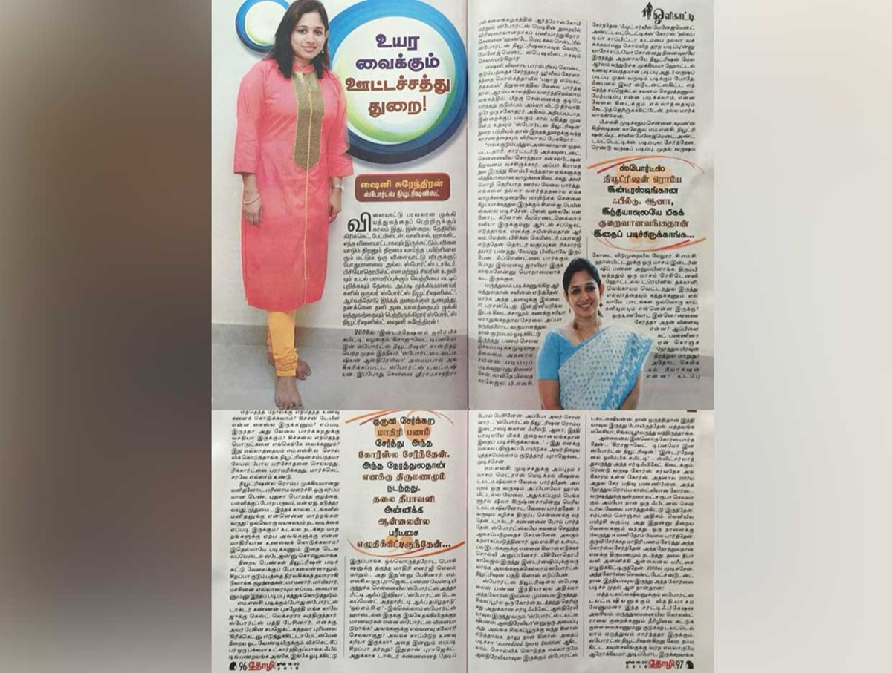

Specialisation 01
Metabolic Health
Workable support for wellness, weight-related goals, women’s and hormonal health, insulin resistance, prediabetes and PCOS.
See metabolic servicesStart with what you need
Food-first guidance for metabolic health and sports performance, shaped around real routines, familiar food and more than 26 years of practice.

26+ yearsPractical nutrition experience
Food firstLocal, home and South Indian foods
Connected careCollaboration when relevant
Two equal specialisations
Specialisation 01
Workable support for wellness, weight-related goals, women’s and hormonal health, insulin resistance, prediabetes and PCOS.
See metabolic servicesSpecialisation 02
Fuel and hydration guidance for performance, recovery, injury prevention, muscle building and changing training demands.
See sports servicesHow guidance is shaped
Recommendations begin with your foods, routines, health context and performance demands. Local, home-cooked and South Indian foods are used where relevant—never displaced by a generic template.
Everyday meals form the foundation. Supplements are considered judiciously, only when appropriate.
The plan must work across family, work, travel and training—not only during the first enthusiastic week.
When relevant, nutrition works alongside physiotherapists, psychologists, sports physicians, gastroenterologists, endocrinologists and other professionals.

Service directory
Four access routes and ten goal-led services use one equal icon-card system. Availability, geography and clinical wording require approval before publication.
Personal guidance for adults seeking metabolic health or sports and fitness support.
Consultation enquiry →Remote consultations for people who prefer online access or live beyond the in-person area.
Online enquiry →Practical nutrition sessions and programmes for workplaces, teams and employee communities.
Corporate enquiry →Age-appropriate food and health talks for students, educators and parent communities.
School enquiry →Practical food habits that support everyday wellbeing and sustainable routines.
Explore fit →A sustainable, context-aware approach to weight-related goals without quick-fix promises.
Explore fit →Food-first support shaped around women’s health context and hormonal concerns.
Explore fit →Practical meal and routine guidance within an appropriate health-care context.
Explore fit →Food and lifestyle guidance that complements advice from the relevant medical team.
Explore fit →Personalised, practical nutrition support within a multidisciplinary care plan when needed.
Explore fit →Fuel and hydration planning aligned with training, competition and performance demands.
Explore fit →Nutrition strategies to support recovery between sessions and across demanding schedules.
Explore fit →Nutrition considered alongside training load, recovery and the wider professional team.
Explore fit →Food-first intake and recovery planning matched to training goals and day-to-day life.
Explore fit →Experience in context
Across 26+ years, Shiny’s work has included collaboration with physiotherapists, psychologists, sports physicians, gastroenterologists, endocrinologists and other relevant professionals.
Sports experience referenced for this concept is approval-bounded and includes Paralympic sport, track and field, wheelchair basketball and running. No result or outcome claim is implied.
Client experiences
Transcribed from the supplied Google review artwork. These are personal experiences, not medical evidence or a promise of comparable outcomes. Final selection and publication permission remain pending.
I had a great experience at the Art of Eating. Special mention to my nutritionist Leena ma’am, who was very helpful and always approachable. The diet was explained very well and I learnt the benefits of eating right. It was a great start towards a healthy lifestyle. I lost 4 kg of weight in 1 month. Apart from the diet chart, she gave me a lot of positive motivation which kept me going.
I am living in Singapore and I was searching for the right kind of holistic weight loss plan for years and blessed that I found Art of eating by Shiny mam. Karpagam was introduced and I am very grateful that her guidance changed my life - both mentally and physically. I lost 11 kgs from 82kg to 71kg in 6 months - which is unbelievable without constant support and guidance from Karpagam. I trashed all my double XL dresses and ended up in L size- inexpressible feeling of joy .Now I can carry myself with more confident and ease. Thanks Karpagam for encouraging me in every single step .You people are doing an amazing job by changing peoples life in a miraculous way.
Watch, listen and explore
Grouped pathways for Instagram Lives, YouTube, Dream Runners Half Marathon, conferences, events and event photos.
 Conferences & eventsTalks, panels and professional forums
Conferences & eventsTalks, panels and professional forums
Event photosSchools, corporate audiences and community eventsSpeaking & education
For schools, workplaces, conferences, panels and community events. Share the event context below so the enquiry can begin with the information that matters.
Consultation route
The client requires an existing Google discovery form as the first step. Its approved URL is not yet available, so this private concept does not invent one. Request the form by WhatsApp or email.
Individual and online consultation availability is confirmed during enquiry.